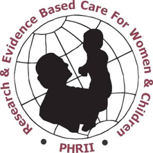

We came to this because reentry is one of the few places in health care where the model is proven and almost nobody can run it.

Astria is a working concept, not a deployed service. We have built the coverage analysis, specified the platform, and are moving into practitioner interviews and a first county partnership.
One county partner and one design partner. If you run a reentry programme, a health centre, or a Medicaid reentry initiative and this is a problem you recognise, we would like to hear where we have it wrong.